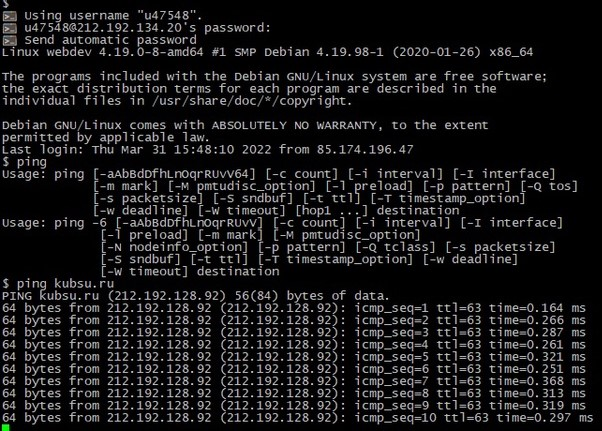
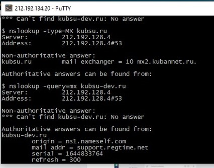

Клиент Putty
Вызов команды ping.

nslookup - запрос информации о домене от DNS. A-записи доменов kubsu.ru и kubsu-dev.ru - IP по которому
находятся сервера

MX-записи доменов kubsu.ru и kubsu-dev.ru

Вызов команды whois.
Клонирование репозитория из GitHub на сервер командой git clone
FTP (протокол передачи данных по сети) соединение через программу FileZilla.